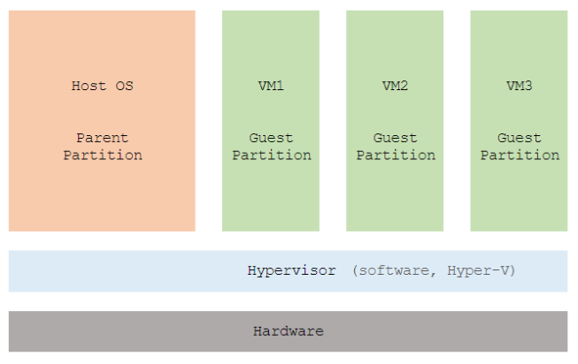

5. Installing Hyper-V
Hyper-V 是 Hardware Level / Server Level 的虛擬技術，VMs 共用整部主機的硬件。Hardware virtualization 比 OS-level virtualization 快。
| Windows Server 2016 的 Hyper-V 內支持安裝以下系統 | |
| Windows Server | Windows Server 2008 with SP2 or later server operating systems. |
| Windows | Vista with SP2 or later client operating systems. |
| Linux editions | CentOS, Red Hat Enterprise Linux, Debian, Oracle Linux, SUSE, and Ubuntu. |
| Other | FreeBSD |
| Host resource protection | 防止一個 VM 霸晒所有 resource. |
| Hyper-V manager improvements | 可以用 HTTP-based Web Services-Management (WS-MAN) 連去第二部 server. |
| Nested virtualization | VM 中再開 VM. |
| Rolling Hyper-V cluster upgrade | 攞啲 VM 加入去人地的實體 cluster. |
| Shielded virtual machines | 連 local admin 都睇吾到 VM 入面的內容. |
| Start order priority | VM start up sequency. |
| Storage quality of service | 針對不同 traffic 做不同 storage throughput. |
| Powershell Direct | Locally powershell 入去 VM 吾需要任何 network. |